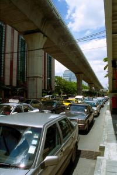

|
Mardi 8 mai
Journée détente à Bangkok. Pour ne pas dire farniente. Notre plus grosse activité
nous a tout de même conduits non pas à l'autre bout de la ville, mais à l'autre
bout de la rue pour nous faire faire des photos d'identité. Avec cette chaleur,
ce n'est pas si anodin que cela! Heureusement qu'il y a la piscine pour se rafraîchir
un peu...
Mercredi 9 mai
Journée studieuse à BKK pour dire comme les locaux (Bangkok=BKK). Une pile
impressionnante de guides, des informations venant du net, la liste des adresses
et des téléphones des ambassades. Nous voici prêts à affronter une tâche que
l'on pensait plus simple a priori: tracer notre itinéraire à travers Thaïlande,
Laos, Vietnam et Cambodge, le problème étant qu'on ne passe pas d'un pays à
l'autre n'importe où. Les points de passage sont peu nombreux, certains sont
fermés, d'autres encore réservés aux locaux. Un vrai casse-tête, sauf si on
écoute les gens de l'ambassade du Vietnam. Pour eux, il n'y a pas de problème,
ça passe partout à ce qu'ils disent... Dans la réalité, il n'existe que deux
points de passsage et plusieurs témoignent s'être fait refouler. On verra bien.
Jeudi 10 mai
Le métro de Bangkok est complètement aérien (il n'est pas vieux, il a été inauguré
en 1999) et il a donc l'avantage, en plus de celui d'éviter les nombreux embouteillages,
de nous laisser observer la ville. Seul son prix n'est pas terrible, on a payé
30 baths (5 FF), au moins 5 ou 6 fois le prix du bus. C'est sans doute pour
cela qu'il est désert. Arrivés au fleuve, le Chao Praya, on emprunte un moyen
de locomotion très prisé ici: le bâteau. De grosses vedettes remontent et descendent
le fleuve sans cesse, avec de nombreux arrêts. Ils peuvent transporter une centaine
de personnes et, là aussi, on est sûr au moins de ne pas être coincé par la
circulation. Par contre, il vaut mieux éviter de tomber à l'eau, d'après la
couleur elle n'a pas l'air très propre.
La suite coule de source. Métro, bâteau... Wat Pho. Il s'agit d'un ensemble
de temples dont l'un héberge un boudha couché gigantesque (46 mètres de long
pour 15 de haut) tout doré. D'autres temples abritent des boudhas, de taille
humaine, assis les uns à côté des autres, distants d'environ un mètre. En tout,
sur le site, pas loin de 500 boudhas! Dont un géant! Autour de ces temples,
on peut se reposer à l'ombre, au milieu de chouettes arbres (sont-ce des bonzaïs,
il ont l'air un peu grands?) et de statues en pierre aux airs terribles. Et
ceux qui veulent peuvent essayer les fameux massages thaïlandais, puisque à
l'intérieur de l'édifice, on trouve une école renommée de massage.
En revenant, on se tente un bout de chemin à pied dans Bangkok. Quel horreur!
Bangkok a beau nous apparaître moins anarchique que les villes indiennes, il
n'empêche qu'un automobiliste, ici comme ailleurs, reste un sauvage! Et traverser
une rue tient parfois du miracle lorsque l'on ne trouve pas les ponts piétons
construits à cet usage. En plus, la pollution n'arrange rien au malaise que
l'on peut ressentir parfois, pauvres piétons que nous sommes au millieu de la
circulation grouillante.
Quel bonheur de retrouver une cuisine avec des casseroles. Lionel revit et
nous prépare son plat favori: des spaghettis bolognaise...
Suite du voyage : Le pont de la rivière Kwai
|

Thailande
Bangkok
|
Thailande
Bangkok
|
|
|